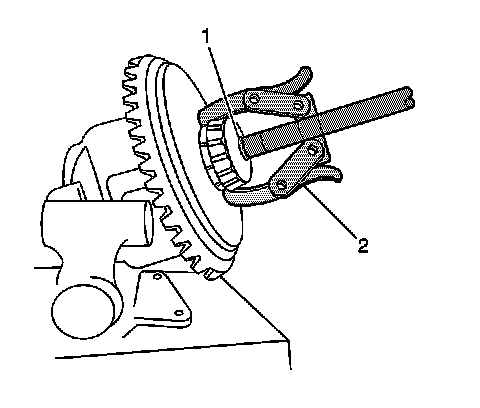
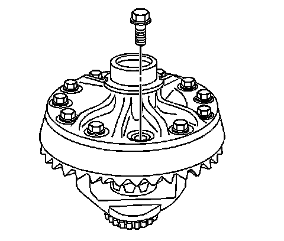
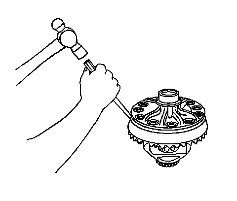
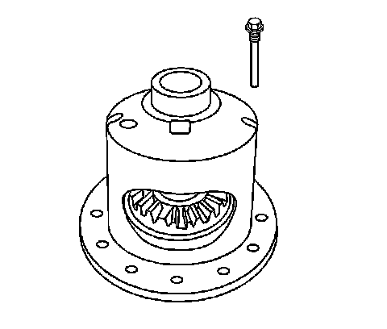
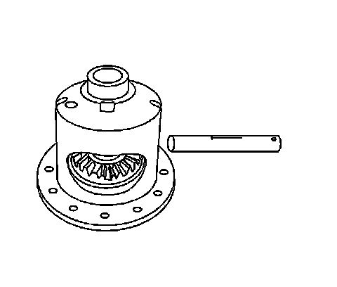
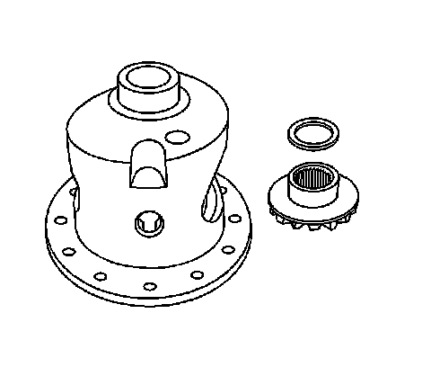

Differential Case Assembly Disassemble (9.25 Inch Axle)
Differential Case Assembly Disassemble (9.25 Inch Axle)
Tools Required
^ J 22888-D Side Bearing Remover Kit
^ J 36597 Side Bearing Puller Pilot - 9.25 in Axle
1. Remove the differential side bearing by performing the following steps:
1. Place the differential case in a vise.

2. Install the J 22888-20A (2) and the J 36597 (1) as shown.
3. Remove the differential side bearings using the J 22888-20A.
2. Remove the differential assembly from the vise.

Important: The ring gear bolts have left-hand threads.
3. Remove the ring gear bolts. Discard the bolts.

Notice: Do not pry the ring gear from the differential case. Prying the ring gear from the differential case may cause damage to the ring gear and/or the differential case.
4. Remove the ring gear from the differential case.
Drive the ring gear off with a brass drift if necessary.

5. Remove the pinion shaft lock bolt.

6. Remove the pinion shaft.
7. Remove the differential side gear spacers.

8. Remove the differential pinion gears and thrust washers by performing the following steps:
1. Drive the pinion gear thrust washers out from the differential case using a hammer and a brass drift.
2. Roll the differential pinion gears out of the differential case.
Mark the pinion gears and thrust washers top and bottom.

9. Remove the differential side gears and thrust washers.
Mark the differential side gears and thrust washers left and right.